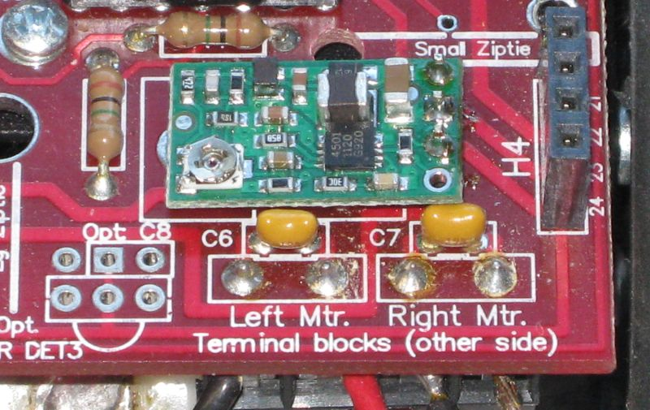

Summary of Changes to Sumovore and Brainboard 2
by Dan Peirce B.Sc.
March 18, 2010 (rev. Nov. 2014)
In 2014 a significant modification was made to the Richmond campus robots
in that that now use four AA lithium batteries. Before 2014 six AA
alkaline batteries were used.
The Purpose of the Modifications
The purpose of the modifications listed on this page are each for
one of the following reasons:
- To make the robot hardware more reliable. Reliability is
essential. It is virtually impossible for the students to have
reasonable success modifying their programs in a resonable
amount of time if the robot hardware does not behave
consistently. The PIC has now being configured to watch for out
for low voltage conditions.
- To make in circuit programming with the PICkit2 possible.
- To make the robots as interchangeable as reasonably possible. A
program should work equally well on any of the robots (to the
extent reasonably possible).
- To simplify the task of building the robots (i.e. leaving off
unnecessary components the robot was designed for the
mini-sumo event and doubles for line following as a secondary
purpose. We only do line following because it is a better
programming task. Also, the florescent tube lighting and
electronic ballast used in our labs can interfere with the IR
opponent detectors [IR DET1, IR DET2] as the florescent tubes
age).
- To use long lasting Lithium batteries.
- The voltage from the lithium batteries is more consistent
than from alkaline batteries.
- The robot speed is also more consistent.
- This means the time of travel is more consistent.
- The motors are actually rated for six volts not nine volts. Using
four lithium batteries should extent the life of the motors.
- The use of a smaller main battery voltage requires a regulator for
the digital electronics that can maintain a regulated output even
when the battery voltage drops below six volts. This is why the
DC-DC converter is used in place of the linear regulator.
- To avoid damaging the track electricians tape covers the bottom of
the scoop.
Robot 1.1
Require new image since two cell battery pack is removed and linear
regulator has been replaced with DC-DC converter

This image shows parts that I am not installing when building the
new version 1.1 robots.
- IR DET1, IR DET2, LED1, LED2 not needed saves build time
LED1 and 2 only confuse our students and waste battery
power.
- IC1 removed because it interferes with changes for dynamic
braking. I leave the socket off to save build time. This IC
is essential if one were to use the discrete brain board that
comes with the sumovore but we don't use it. I save those
parts for other things.
- C2, C3, R3, R4 without IC1 they don't do anything I
leave them off to save build time
- Linear regulator replaced with DC-DC converter board. add details
- Two cell battery pack from top of main board is removed and replaced
with a wire short.
- Test point added to main board to check battery level .

This image is actually of main board 1.0 but the
position of Diag1 is about the same on version 1.1 board (just
slightly farther from switch and the Ziptie ref. no longer exists
on the newer board)
Sensor board on version 1.1 robot

Note most of the parts left off.
All copper is coated with solder to avoid oxidation. Note IC4 does
not do anything good for us. It just creates some EMI that could
possibly cause spikes on the sensor outputs. LED4 and LED5 just
waste battery power. TP1 is for adjusting 555 frequency and is not
needed.
Robot 1.0
- Replaced linear regulator with DC-DC converter.

- Two cell battery pack from top of main board is removed and replaced
with a wire short.
- IC1 removed from socket. removed because it interferes with
changes for dynamic braking
- test point added to main board to check battery level
Sensor board on version 1.0 robot

PIC Brainboard #2

-
PIC16F877A is replaced with a PIC18F4525
- PIC16Fxxx components are not optimized for C while the
PIC18Fxxxx components are
- PIC16Fxxx components have only a 8 level hardware stack while
PIC18Fxxxx components have a 32 level hardware stack. this
makes the PIC16Fxxx components much more prone to hardware
stack overflow problems which is bad when one is encouraging
students to create functions. Also the printf() function
itself is a wrapper that calls functions that call functions
(all in the stdio module). It is easy to exceed 8 levels of
function calls.
-
Resonator not installed we use the internal osc
-
I2C connector not installed. we don't use it
-
Reset switch not installed instead we use the two holes for our
programming adapter board see below
-
In Richmond I change 5 resistors (under the PIC) so that the
sensors do not go into saturation even above white paper
(resistors chosen in an attempt to get same response to grayscale
for each sensor).
-
Two jumpers added for dynamic braking.
E1 to p13 of P2 and E0 to p15 of P2.
-
a header with wires attached is hot glued under the PIC board to provide a
connection for programming.
There are four connections between the two boards (see four pins).
The two pins that are 0.4 inch apart fit into the holes where the
reset switch would have been. The two pins close together fit into
the holes for B6 and B7. Those four points are indicated in the
image below.
New image required since two cell battery pack has ben removed.

All Robots
Tape sensor board to front scoop.

Layer #1 folded over bottom edge of scoop
Layer #2 wrapped around scoop from end to end to keep layer #1
from lifting
Layer #3 wrapped around sensor board and scopp from end to end to
keep sensor board tight against scoop and to try to keep sensor
board from moving.

Close up from end showing tape wrapped around bottom edge of scoop
(upside down)

New passive cable to be used with version 2 brain board
A simple passive cable is needed to connect between the robot and
the PC COM1 port. Page 13 of the PIC brainboard V 2.0
manual
PIC brainboard V 2.0 manual shows the connections between the DB9
connector and pins that fit into the brainboard. As suggested I
used a cable from a dead serial mouse for the connector and
cable.